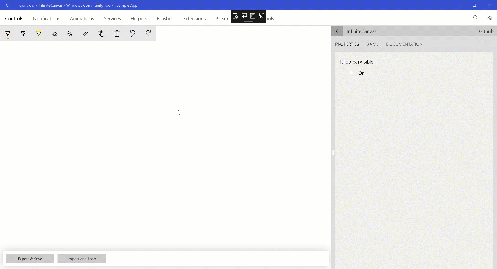

InfiniteCanvas (Archived)
Warning
This document has been archived and the component is not available in the current version of the Windows Community Toolkit.
While there are no immediate plans to port this component to 8.x, the community is welcome to express interest or contribute to its inclusion.
For more information:
Original documentation follows below.
The InfiniteCanvas control is a canvas that supports Infinite Scrolling, Ink, Text, Format Text, Zoom in/out, Redo, Undo, Export canvas data, Import canvas data.
Syntax
<Page ...
xmlns:controls="using:Microsoft.Toolkit.Uwp.UI.Controls"/>
<controls:InfiniteCanvas Name="canvas"/>
Sample Output

Properties
| Property | Type | Description |
|---|---|---|
| CanvasWidth | double | Gets or sets the width of the drawing area, default value is 2097152. This is different from the Width property which specifies the Width of the control |
| CanvasHeight | double | Gets or sets the height of the drawing area, default value is 2097152. This is different from the Height property which specifies the Height of the control |
| IsToolbarVisible | bool | Gets or sets a value indicating whether the toolbar is visible or not. |
| MaxZoomFactor | double | Gets or sets the MaxZoomFactor for the canvas, range between 1 to 10 and the default value is 4. |
| MinZoomFactor | double | Gets or sets the MinZoomFactor for the canvas, range between .1 to 1 the default value is .25. |
Methods
| Method | Return Type | Description |
|---|---|---|
| Redo() | void | Redo the last action. |
| Undo() | void | Undo the last action. |
| ExportAsJson() | string | Export the InfiniteCanvas as json string. |
| ImportFromJson(string json) | void | Import InfiniteCanvas from json string and render the new canvas, this function will empty the Redo/Undo queue. |
Events
ReRenderCompleted
This event triggered after each render happened because of any change in the canvas elements. This event could be used to do the Auto Save functionality.
Examples
The following sample demonstrates how to add InfiniteCanvas Control
<Page ....
xmlns:controls="using:Microsoft.Toolkit.Uwp.UI.Controls">
<Grid>
<controls:InfiniteCanvas Name="canvas"/>
</Grid>
</Page>
Sample Project
InfiniteCanvas Sample Page Source. You can see this in action in the Windows Community Toolkit Sample App.
Default Template
InfiniteCanvas XAML File is the XAML template used in the toolkit for the default styling.
Requirements
| Device family | Universal, 10.0.16299.0 or higher |
|---|---|
| Namespace | Microsoft.Toolkit.Uwp.UI.Controls |
| NuGet package | Microsoft.Toolkit.Uwp.UI.Controls |